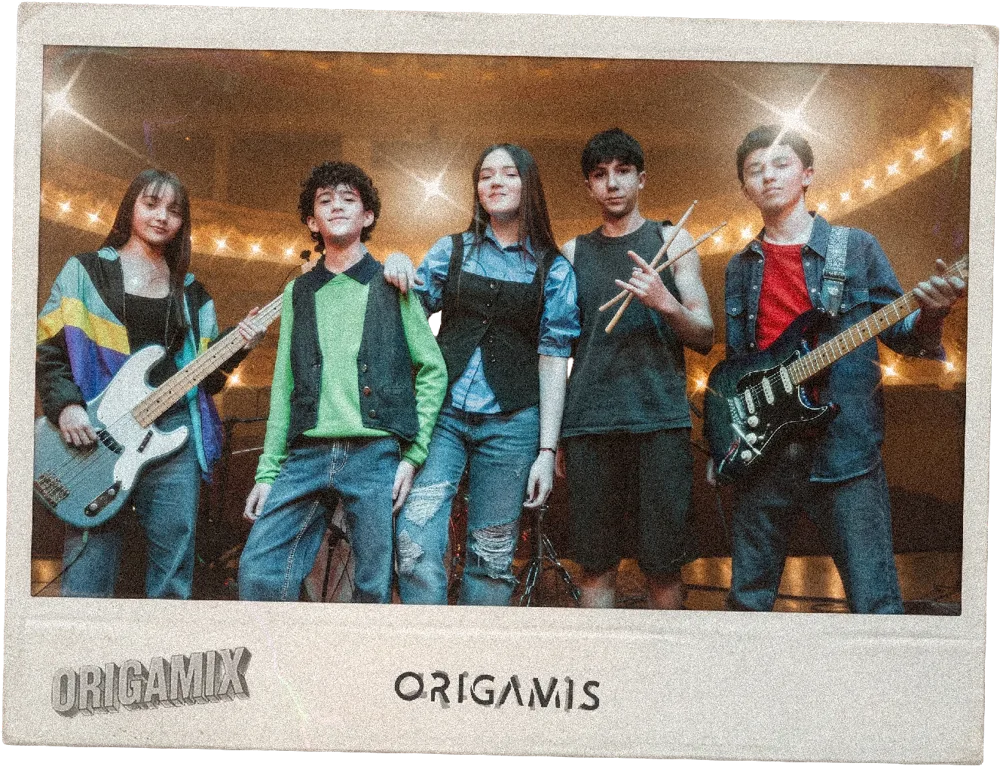
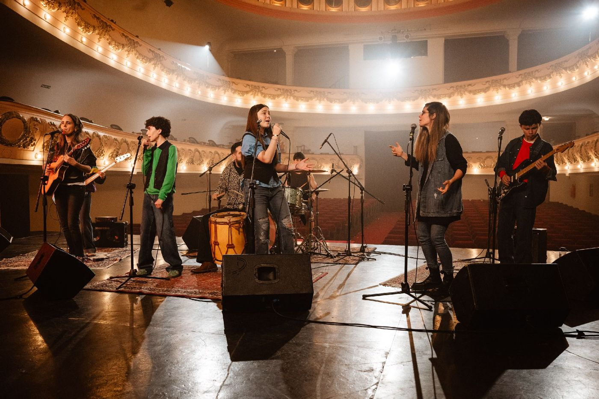
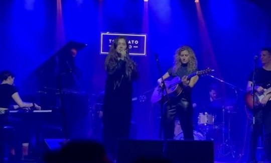
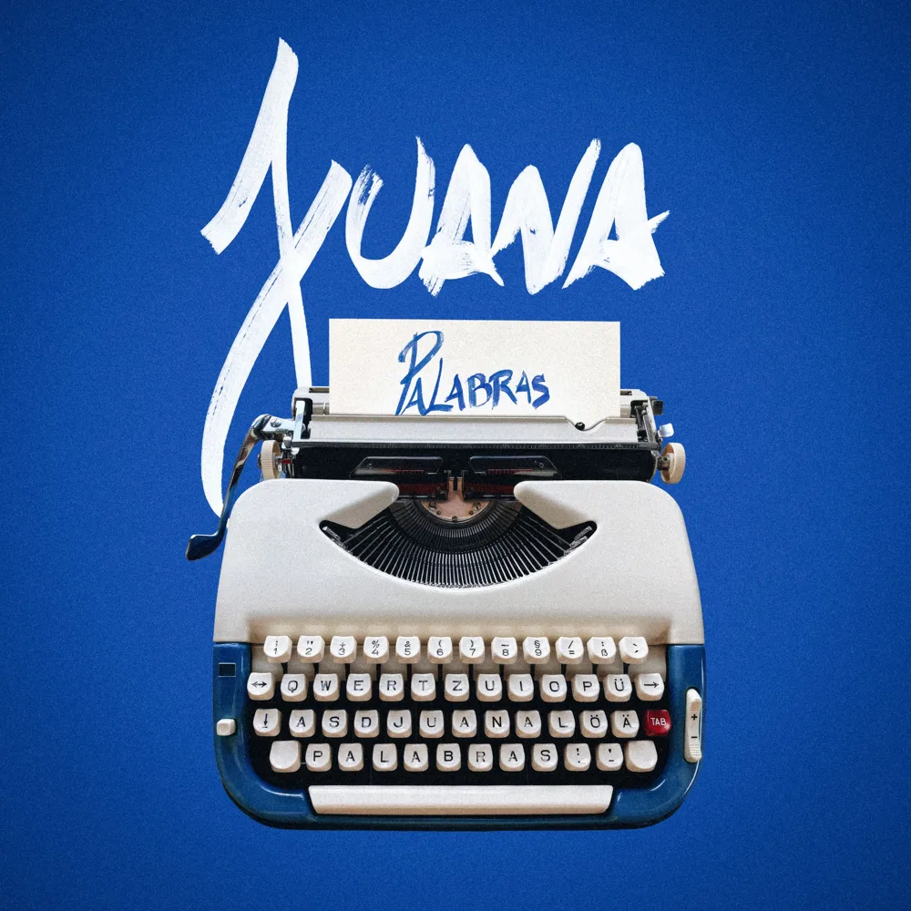

Origamix
Cuatro especiales de Gelatina, conmigo como voz principal.


Soy compositora, intérprete y actriz

Juana Cabrera
Empecé en 2014, bailando y actuando. En 2020 me sumé a Otro Mundo, y ese camino me llevó a actuar como Tomika en School of Rock, en el Teatro Gran Rex.
Compongo mis propias canciones y creo que soy una intérprete muy versátil. Mi lenguaje está evolucionando todo el tiempo.
2014 · 8 años (a confirmar)
Canté, bailé y actué en distintas academias.
2015 · x años
Participé con mi voz y coros en el álbum de Magdalena Fleitas.
2020 · x años
Me formé en la escuela de música Otro Mundo.
2023 · x años
Actué en el musical en el Teatro Gran Rex.
2025 · x años
Canté en el streaming de Gelatina y colaboré con Feli Colina y Eruca Sativa. El programa recibió una nominación a los Martín Fierro de Streaming.
2026 · x años
ANA PRADA


School of Rock: más de 20 funciones en una temporada.
Magdalena Fleitas: voz y coros en el álbum “Risas del Rock”.
Origamix: voz principal femenina.

En el estudio

Estoy viviendo mi proyecto musical y artístico alrededor de las palabras: escribo y compongo mis canciones para transformar eso mío en algo compartido.
Descubrir el mundo
es hacer preguntas.

Cuatro especiales de Gelatina, conmigo como voz principal.

Clips juntas y una canción en El Tazzo.
Cuatro episodios de tres minutos.
Palabras — preguntas — canciones
Las letras de mi cuaderno, las melodías de mi voz, la producción con Ana Prada y el estudio con Matías Cella.
Ver el procesoSe entra con el código de la postal.
